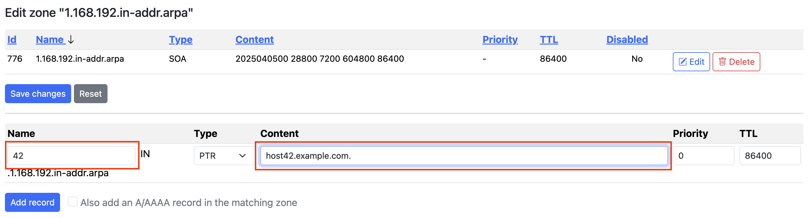
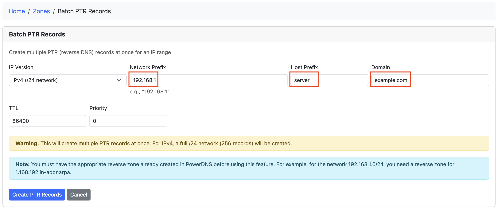
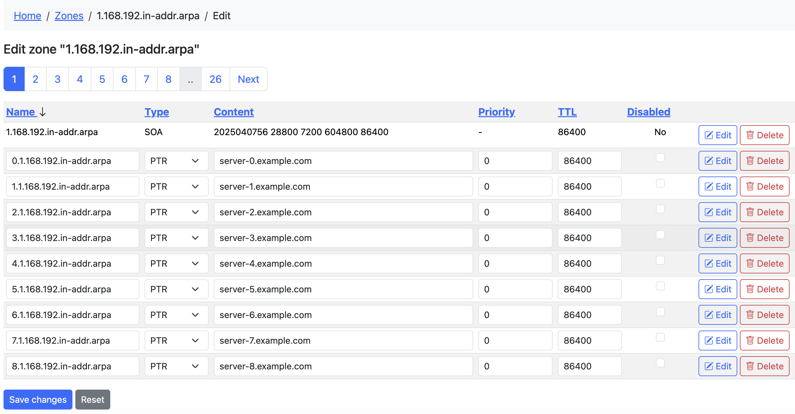
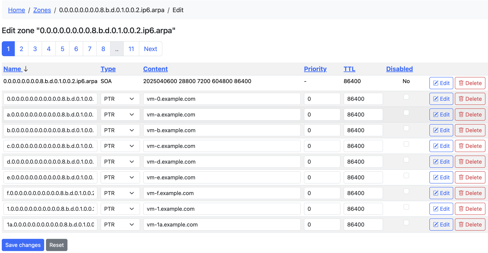

Reverse DNS (PTR Records) Guide
This guide explains how to create and manage Reverse DNS (PTR) records in PowerAdmin for PowerDNS.
What are PTR Records?
PTR (Pointer) records provide reverse DNS resolution, mapping IP addresses to hostnames. They are used for:
- Email server verification
- Security controls and authentication
- Network troubleshooting
- Server identification
Prerequisites
Before creating PTR records, you need:
- The appropriate reverse zone must exist in PowerDNS
- For IPv4: Create a zone like
1.168.192.in-addr.arpafor the 192.168.1.0/24 network -
For IPv6: Create a zone like
0.0.0.0.0.0.0.0.8.b.d.0.1.0.0.2.ip6.arpafor 2001:db8::/64 -
Proper permissions to add records to these zones:
- You need at least one of these permissions:
zone_content_edit_own- To edit zones you ownzone_content_edit_others- To edit any zone
- For creating reverse zones, you need:
zone_master_addorzone_slave_addpermissions
Method 1: Adding Individual PTR Records
For single PTR records:
- Go to the reverse zone's record list (e.g.,
1.168.192.in-addr.arpa) - Click "Add Record" at the top of the zone edit page
- Enter the information:
- Name: The last octet of the IP address (e.g.,
42for 192.168.1.42) - Type: PTR
- Content: The fully qualified domain name (FQDN) this IP should resolve to (e.g.,
host42.example.com.) - TTL: Time-to-live value (e.g., 86400 for 1 day)
- Click "Add Record"

Method 2: Using Batch PTR Records Feature
For creating multiple PTR records at once:
- Access the Batch PTR Records feature:
- From the top navigation: Zones → Batch PTR Records
-
From the dashboard: Click the "Batch PTR Records" card
-
Complete the form:
- IP Version: Choose IPv4 or IPv6
- Network Prefix:
- For IPv4: The first three octets (e.g.,
192.168.1) - For IPv6: The /64 prefix (e.g.,
2001:db8:1:1)
- For IPv4: The first three octets (e.g.,
- Host Prefix: Base name for the hosts (e.g.,
server) - Domain: Domain suffix for PTR records (e.g.,
example.com) - Number of IPv6 Records: (IPv6 only) How many records to create
- TTL: Time-to-live value
-
Priority: Usually 0 for PTR records
-
Click "Create PTR Records"

Examples
IPv4 Example
- Network Prefix:
192.168.1 - Host Prefix:
server - Domain:
example.com
This will create 256 PTR records:
- 0.1.168.192.in-addr.arpa → server-0.example.com.
- 1.1.168.192.in-addr.arpa → server-1.example.com.
- ...through...
- 255.1.168.192.in-addr.arpa → server-255.example.com.

IPv6 Example
- Network Prefix:
2001:db8:1:1 - Host Prefix:
vm - Domain:
example.com - Number of records: 100
This will create 100 PTR records with hostnames like vm-0.example.com through vm-99.example.com

Tips for Batch PTR Records
- Run Multiple Times Safely: You can run the batch tool multiple times - existing records will be skipped
- Progress Reporting: The tool reports how many records were created, skipped, or failed
- Reverse Zone Required: The appropriate reverse zone must exist before using this feature
- Automated Creation: All hostnames are generated automatically based on the pattern
{prefix}-{number}.{domain}
Permissions and Access Control
The Batch PTR Records feature follows PowerAdmin's permission system:
- Required Feature Flag:
-
The
add_reverse_recordoption must be enabled in the PowerAdmin configuration -
Required User Permissions:
- Either the
zone_content_edit_ownorzone_content_edit_otherspermission is required to access this feature -
When accessed from a specific zone page, you also need ownership of that zone (if using
zone_content_edit_own) -
Permission Hierarchy:
zone_content_edit_othersgives access to all zoneszone_content_edit_ownlimits access to zones you own-
No edit permissions means no access to batch PTR records
-
Administrative Setup:
- Administrators can assign these permissions through permission templates
- Users who can only view zones will not see the Batch PTR Records option
Troubleshooting
- No matching reverse zone found: Create the appropriate reverse zone first
- Permission denied: Ensure you have rights to add records to the reverse zone
- No records created: Check if records already exist (they will be skipped)
- Feature not visible: Check if you have the required permissions
Best Practices
- Use meaningful host prefixes that identify the purpose of the servers
- Use consistent TTL values across your reverse zones
- Ensure your forward (A/AAAA) and reverse (PTR) records match
- Consider using shorter TTLs during migration periods